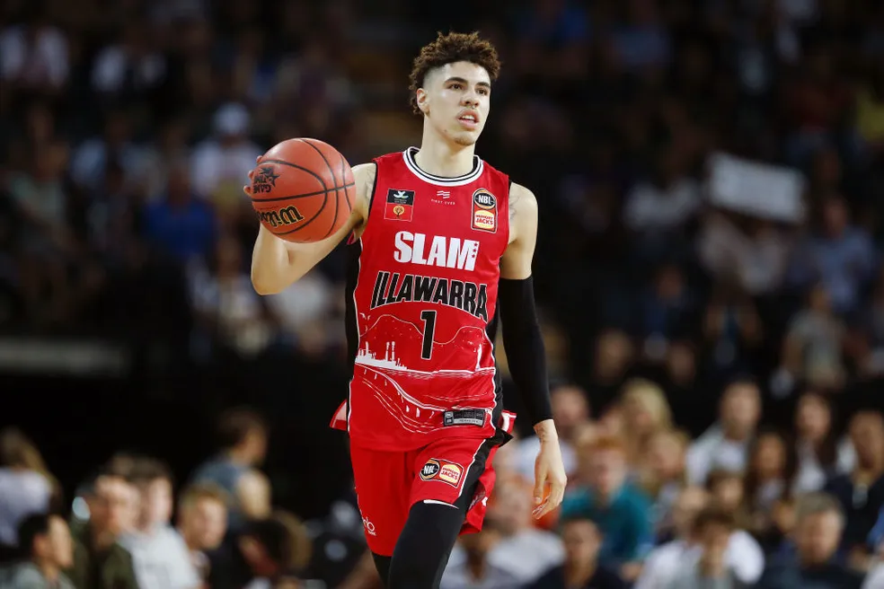

LaMelo Ball
22 de agosto de 2001

LaMelo LaFrance Ball é um jogador norte-americano de basquete profissional que atualmente joga no Charlotte Hornets da National Basketball Association.
LaMelo LaFrance Ball é um jogador norte-americano de basquete profissional que atualmente joga no Charlotte Hornets da National Basketball Association.